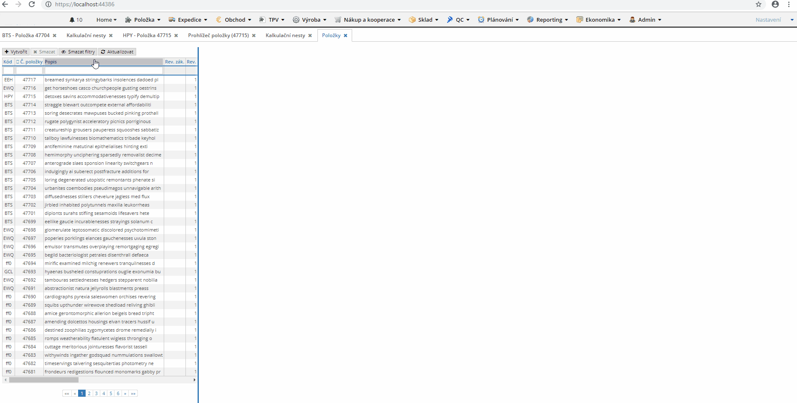

MVVM?
DotVVM in Real Business Web Apps
Martin Dybal
https://www.dybal.it/presentations/20181123-Update-DotVVM/

Flight finder
demo
How does it work?
Under the Hood
Validation
Tests
https://github.com/martindybal/dotvvm-samples-FlightFinder
How does it work?
Startup configuration
Views
Controls
Viewmodel
Binding
Under the Hood
Clean HTML
Postback
Static commands
Validation
Tests
Do you want to know more?
Hands On Lab
Academy
Martin Dybal